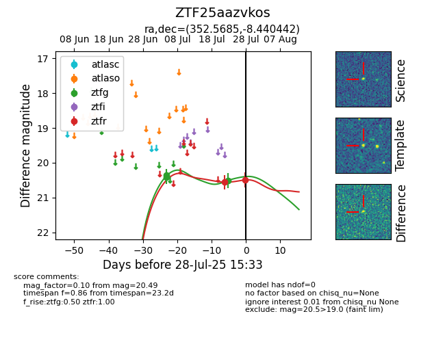

Target ZTF25aazvkos at 2025-07-28 15:33, see:
FINK: fink-portal.org/ZTF25aazvkos
Lasair: lasair-ztf.lsst.ac.uk/objects/ZTF25aazvkos
ALeRCE: alerce.online/object/ZTF25aazvkos
alt names
ZTF25aazvkos (ztf,fink)
coordinates:
equatorial (ra, dec) = (352.5685,-8.44044)
galactic (l, b) = (73.3782,-63.20778)
photometry
last ztfg=20.51, ztfr=20.49
3 ztfg, 2 ztfr detections
